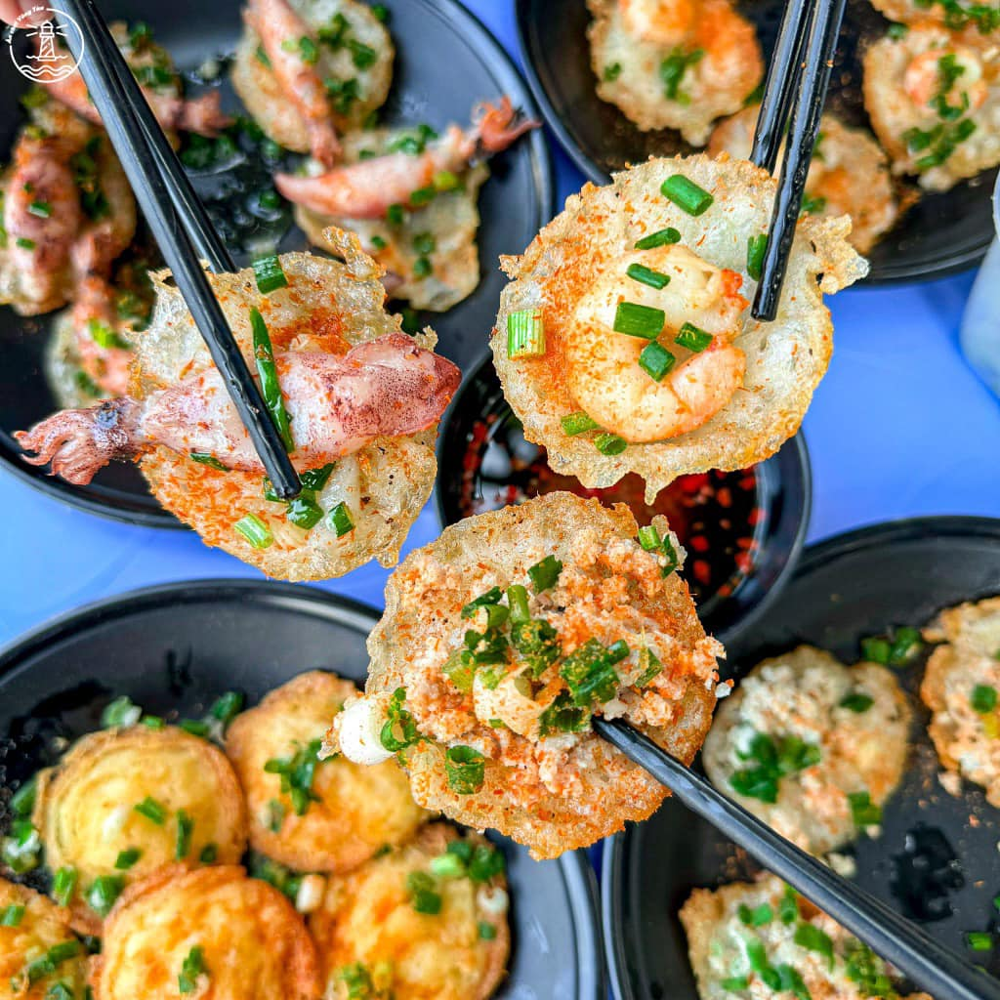

Bánh khọt là món ăn được làm từ bột gạo, nước cốt dừa, hành lá, topping thường có tôm hoặc mực. Bánh được đổ trong khuôn nhỏ, chiên vàng giòn rồi ăn kèm rau sống và nước mắm chua ngọt. Món ăn này nổi tiếng ở Vũng Tàu. Mình rất thích ăn bánh khọt vì hương vị thơm ngon và giòn rụm của nó.